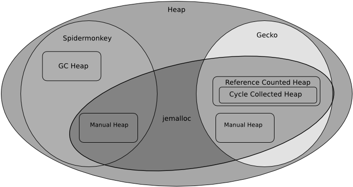

MemShrink
by Kyle Huey
Introduction
Firefox has long had a reputation for using too much memory. The accuracy of that reputation has varied over the years but it has stuck with the browser. Every Firefox release in the past several years has been met by skeptical users with the question “Did they fix the memory leak yet?” We shipped Firefox 4 in March 2011 after a lengthy beta cycle and several missed ship dates—and it was met by the same questions. While Firefox 4 was a significant step forward for the web in areas such as open video, JavaScript performance, and accelerated graphics, it was unfortunately a significant step backwards in memory usage.
The web browser space has become very competitive in recent years. With the rise of mobile devices, the release of Google Chrome, and Microsoft reinvesting in the web, Firefox has found itself having to contend with a number of excellent and well-funded competitors instead of just a moribund Internet Explorer. Google Chrome in particular has gone to great lengths to provide a fast and slim browsing experience. We began to learn the hard way that being a good browser was no longer good enough; we needed to be an excellent browser. As Mike Shaver, at the time VP of Engineering at Mozilla and a longtime Mozilla contributor, said, “this is the world we wanted, and this is the world we made.”
That is where we found ourselves in early 2011. Firefox’s market share was flat or declining while Google Chrome was enjoying a fast rise to prominence. Although we had begun to close the gap on performance, we were still at a significant competitive disadvantage on memory consumption as Firefox 4 invested in faster JavaScript and accelerated graphics often at the cost of increased memory consumption. After Firefox 4 shipped, a group of engineers led by Nicholas Nethercote started the MemShrink project to get memory consumption under control. Today, nearly a year and a half later, that concerted effort has radically altered Firefox’s memory consumption and reputation. The “memory leak” is a thing of the past in most users’ minds, and Firefox often comes in as one of the slimmest browsers in comparisons. In this chapter we will explore the efforts we made to improve Firefox’s memory usage and the lessons we learned along the way.
Architecture Overview
You will need a basic grasp of what Firefox does and how it works to make sense of the problems we encountered and the solutions we found.
A modern web browser is fundamentally a virtual machine for running untrusted code. This code is some combination of HTML, CSS, and JavaScript (JS) provided by third parties. There is also code from Firefox add-ons and plugins. The virtual machine provides capabilities for computation, layout and styling of text, images, network access, offline storage, and even access to hardware-accelerated graphics. Some of these capabilities are provided through APIs designed for the task at hand; many others are available through APIs that have been repurposed for entirely new uses. Because of the way the web has evolved, web browsers must be very liberal in what they accept, and what browsers were designed to handle 15 years ago may no longer be relevant to providing a high-performance experience today.
Firefox is powered by the Gecko layout engine and the Spidermonkey JS engine. Both are primarily developed for Firefox, but are separate and independently reusable pieces of code. Like all widely used layout and JS engines, both are written in C++. Spidermonkey implements the JS virtual machine including garbage collection and multiple flavors of just-in-time compilation (JIT). Gecko implements most APIs visible to a web page including the DOM, graphical rendering via software or hardware pipelines, page and text layout, a full networking stack, and much more. Together they provide the platform that Firefox is built on. The Firefox user interface, including the address bar and navigation buttons, is just a series of special web pages that run with enhanced privileges. These privileges allow them access to all sorts of features that normal web pages cannot see. We call these special, built-in, privileged pages chrome (no relation to Google Chrome) as opposed to content, or normal web pages.
For our purposes, the most interesting details about Spidermonkey and Gecko are how they manage memory. We can categorize memory in the browser based on two characteristics: how it is allocated and how it is freed. Dynamically allocated memory (the heap) is obtained in large chunks from the operating system and divided into requested quantities by the heap allocator. There are two main heap allocators: the specialized garbage-collected heap allocator used for the garbage-collected memory (the GC heap) in Spidermonkey, and jemalloc, which is used by everything else in Spidermonkey and Gecko. There are also three methods of freeing memory: manually, via reference counting, and via garbage collection.

The GC heap in Spidermonkey contains objects, functions, and most of the other things created by running JS. We also store implementation details whose lifetimes are linked to these objects in the GC heap. This heap uses a fairly standard incremental mark-and-sweep collector that has been heavily optimized for performance and responsiveness. This means that every now and then the garbage collector wakes up and looks at all the memory in the GC heap. Starting from a set of “roots” (such as the global object of the page you are viewing) it “marks” all the objects in the heap that are reachable. It then “sweeps” all the objects that are not marked and reuses that memory when needed.
In Gecko most memory is reference counted. With reference counting the number of references to a given piece of memory is tracked. When that number reaches zero the memory is freed. While reference counting is technically a form of garbage collection, for this discussion we distinguish it from garbage collection schemes that require specialized code (i.e., a garbage collector) to periodically reclaim memory. Simple reference counting is unable to deal with cycles, where one piece of memory A references another piece of memory B, and vice versa. In this situation both A and B have reference counts of 1, and are never freed. Gecko has a specialized tracing garbage collector specifically to collect these cycles which we call the cycle collector. The cycle collector manages only certain classes that are known to participate in cycles and opt in to cycle collection, so we can think of the cycle collected heap as a subset of the reference counted heap. The cycle collector also works with the garbage collector in Spidermonkey to handle cross-language memory management so that C++ code can hold references to JS objects and vice versa.
There is also plenty of manually managed memory in both Spidermonkey and Gecko. This encompasses everything from the internal memory of arrays and hashtables to buffers of image and script source data. There are also other specialized allocators layered on top of manually managed memory. One example is an arena allocator. Arenas are used when a large number of separate allocations can all be freed simultaneously. An arena allocator obtains chunks of memory from the main heap allocator and subdivides them as requested. When the arena is no longer needed the arena returns those chunks to the main heap without having to individually free the many smaller allocations. Gecko uses an arena allocator for page layout data, which can be thrown away all at once when a page is no longer needed. Arena allocation also allows us to implement security features such as poisoning, where we overwrite the deallocated memory so it cannot be used in a security exploit.
There are several other custom memory management systems in small parts of Firefox, used for a variety of different reasons, but they are not relevant to our discussion. Now that you have a brief overview of Firefox’s memory architecture, we can discuss the problems we found and how to fix them.
You Make What You Measure
The first step of fixing a problem is figuring out what the problem is. The strict definition of a memory leak, allocating memory from the operating system (OS) and not releasing it back to the OS, does not cover all the situations we are interested in improving. Some situations that we encounter that are not “leaks” in the strict sense:
-
A data structure requires twice as much memory as it needs to.
-
Memory that is no longer used is not released until a timer expires.
-
Many copies of the same large buffer (strings, image data, etc.) exist throughout the program.
This is all complicated even further by the fact that most of the memory in Firefox’s heap is subject to some form of garbage collection and so memory that is no longer used will not be released until the next time the GC runs. We have taken to using the term “leak” very loosely to encompass any situation that results in Firefox being less memory-efficient than it could reasonably be. This is consistent with the way our users employ the term as well: most users and even web developers cannot tell if high memory usage is due to a true leak or any number of other factors at work in the browser.
When MemShrink began we did not have much insight into the browser’s memory usage. Identifying the nature of memory problems often required using complex tools like Massif or lower-level tools like GDB. These tools have several disadvantages:
-
They are designed for developers and are not easy to use.
-
They are not aware of Firefox internals (such as the implementation details of the various heaps).
-
They are not “always on”—you have to be using them when the problem happens.
In exchange for these disadvantages you get some very powerful tools. To address these disadvantages over time we built a suite of custom tools to gain more insight with less work into the behavior of the browser.
The first of these tools is about:memory. First introduced in Firefox 3.6, it originally displayed simple statistics about the heap, such as the amount of memory mapped, and committed. Later measurements for some things of interest to particular developers were added, such as the memory used by the embedded SQLite database engine and the amount of memory used by the accelerated graphics subsystem. We call these measurements memory reporters. Other than these one-off additions about:memory remained a primitive tool presenting a few summary statistics on memory usage. Most memory did not have a memory reporter and was not specifically accounted for in about:memory. Even so, about:memory can be used by anyone without a special tool or build of Firefox just by typing it into the browser’s address bar. This would become the “killer feature”.
Well before MemShrink was a gleam in anyone’s eye the JavaScript engine in Firefox was refactored to split the monolithic global GC heap into a collection of smaller subheaps called compartments. These compartments separate things like chrome and content (privileged and unprivileged code, respectively) memory, as well as the memory of different web sites. The primary motivation for this change was security, but it turned out to be very useful for MemShrink. Shortly after this was implemented we prototyped a tool called about:compartments that displayed all of the compartments, how much memory they use, and how they use that memory. about:compartments was never integrated directly into Firefox, but after MemShrink started it was modified and combined into about:memory.
While adding this compartment reporting to about:memory, we realized that incorporating similar reporting for other allocations would enable useful heap profiling without specialized tools like Massif. about:memory was changed so that instead of producing a series of summary statistics it displayed a tree breaking down memory usage into a large number of different uses. We then started to add reporters for other types of large heap allocations such as the layout subsystem. One of our earliest metric-driven efforts was driving down the amount of heap-unclassified, memory that was not covered by a memory reporter. We picked a pretty arbitrary number, 10% of the total heap, and set out to get heap-unclassified down to that amount in average usage scenarios. Ultimately it would turn out that 10% was too low a number to reach. There are simply too many small one-off allocations in the browser to get heap-unclassified reliably below approximately 15%. Reducing the amount of heap-unclassified increases the insight into how memory is being used by the browser.
To reduce the amount of heap-unclassified we wrote a tool, christened the Dark Matter Detector (DMD), that helped track down the unreported heap allocations. It works by replacing the heap allocator and inserting itself into the about:memory reporting process and matching reported memory blocks to allocated blocks. It then summarizes the unreported memory allocations by call site. Running DMD on a Firefox session produces lists of call sites responsible for heap-unclassified. Once the source of the allocations was identified, finding the responsible component and a developer to add a memory reporter for it proceeded quickly. Within a few months we had a tool that could tell you things like “all the Facebook pages in your browser are using 250 MB of memory, and here is the breakdown of how that memory is being used.”
We also developed another tool (called Measure and Save) for debugging memory problems once they were identified. This tool dumps representations of both the JS heap and the cycle-collected C++ heap to a file. We then wrote a series of analysis scripts that can traverse the combined heap and answer questions like “what is keeping this object alive?” This enabled a lot of useful debugging techniques, from just examining the heap graph for links that should have been broken to dropping into a debugger and setting breakpoints on specific objects of interest.
A major benefit of these tools is that, unlike with a tool such as Massif, you can wait until the problem appears before using the tool. Many heap profilers (including Massif) must be started when the program starts, not partway through after a problem appears. Another benefit that these tools have is that the information can be analyzed and used without having the problem reproduced in front of you. Together they allow users to capture information for the problem they are seeing and send it to developers when those developers cannot reproduce the problem. Expecting users of a web browser, even those sophisticated enough to file bugs in a bug tracker, to use GDB or Massif on the browser is usually asking too much. But loading about:memory or running a small snippet of JavaScript to get data to attach to a bug report is a much less arduous task. Generic heap profilers capture a lot of information, but come with a lot of costs. We were able to write a set of tools tailored to our specific needs that offered us significant benefits over the generic tools.
It is not always worth investing in custom tooling; there is a reason we use GDB instead of writing a new debugger for each piece of software we build. But for those situations where the existing tools cannot deliver you the information you need in the way you want it, we found that custom tooling can be a big win. It took us about a year of part-time work on about:memory to get to a point where we considered it complete. Even today we are still adding new features and reporters when necessary. Custom tools are a significant investment. An extensive digression on the subject is beyond the scope of this chapter, but you should consider carefully the benefits and costs of custom tools before writing them.
Low-Hanging Fruit
The tools that we built provided us significantly more visibility into memory usage in the browser than we had previously. After using them for a while we began to get a feel for what was normal and what was not. Spotting things that were not normal and were possibly bugs became very easy. Large amounts of heap-unclassified pointed to usage of more arcane web features that we had not yet added memory reporters for or leaks in Gecko’s internals. High memory usage in strange places in the JS engine could indicate that the code was hitting some unoptimized or pathological case. We were able to use this information to track down and fix the worst bugs in Firefox.
One anomaly we noticed early on was that sometimes a compartment would stick around for a page that had already been closed, even after forcing the garbage collector to run repeatedly. Sometimes these compartments would eventually go away on their own and sometimes they would last indefinitely. We named these leaks zombie compartments. These were some of our most serious leaks, because the amount of memory a web page can use is unbounded. We fixed a number of these bugs in both Gecko and the Firefox UI code, but it soon became apparent that the largest source of zombie compartments was add-ons. Dealing with leaks in add-ons stymied us for several months before we found a solution that is discussed later in this chapter. Most of these zombie compartments, both in Firefox and in add-ons, were caused by long-lived JS objects maintaining references to short-lived JS objects. The long-lived JS objects are typically objects attached to the browser window, or even global singletons, while the short-lived JS objects might be objects from web pages.
Because of the way the DOM and JS work, a reference to a single object from a web page will keep the entire page and its global object (and anything reachable from that) alive. This can easily add up to many megabytes of memory. One of the subtler aspects of a garbage collected system is that the GC only reclaims memory when it is unreachable, not when the program is done using it. It is up to the programmer to ensure that memory that will not be used again is unreachable. Failing to remove all references to an object has even more severe consequences when the lifetime of the referrer and the referent are expected to differ significantly. Memory that should be reclaimed relatively quickly (such as the memory used for a web page) is instead tied to the lifetime of the longer lived referrer (such as the browser window or the application itself).
Fragmentation in the JS heap was also a problem for us for a similar reason. We often saw that closing a lot of web pages did not cause Firefox’s memory usage, as reported by the operating system, to decline significantly. The JS engine allocates memory from the operating system in megabyte-sized chunks and subdivides that chunk amongst different compartments as needed. These chunks can only be released back to the operating system when they are completely unused. We found that allocation of new chunks was almost always caused by web content demanding more memory, but that the last thing keeping a chunk from being released was often a chrome compartment. Mixing a few long-lived objects into a chunk full of short-lived objects prevented us from reclaiming that chunk when web pages were closed. We solved this by segregating chrome and content compartments so that any given chunk has either chrome or content allocations. This significantly increased the amount of memory we could return to the operating system when tabs are closed.
We discovered another problem caused in part by a technique to reduce fragmentation. Firefox’s primary heap allocator is a version of jemalloc modified to work on Windows and Mac OS X. Jemalloc is designed to reduce memory loss due to fragmentation. One of the techniques it uses to do this is rounding allocations up to various size classes, and then allocating those size classes in contiguous chunks of memory. This ensures that when space is freed it can later be reused for a similar size allocation. It also entails wasting some space for the rounding. We call this wasted space slop. The worst case for certain size classes can involve wasting almost 50% of the space allocated. Because of the way jemalloc size classes are structured, this usually happens just after passing a power of two (e.g., 17 rounds up to 32 and 1025 rounds up to 2048).
Often when allocating memory you do not have much choice in the amount you ask for. Adding extra bytes to an allocation for a new instance of a class is rarely useful. Other times you have some flexibility. If you are allocating space for a string you can use extra space to avoid having to reallocate the buffer if later the string is appended to. When this flexibility presents itself, it makes sense to ask for an amount that exactly matches a size class. That way memory that would have been “wasted” as slop is available for use at no extra cost. Usually code is written to ask for powers of two because those fit nicely into pretty much every allocator ever written and do not require special knowledge of the allocator.
We found lots of code in Gecko that was written to take advantage of this technique, and several places that tried to and got it wrong. Multiple pieces of code attempted to allocate a nice round chunk of memory, but got the math slightly wrong, and ended up allocating just beyond what they intended. Because of the way jemalloc’s size classes are constructed, this often led to wasting nearly 50% of the allocated space as slop. One particularly egregious example was in an arena allocator implementation used for layout data structures. The arena attempted to get 4 KB chunks from the heap. It also tacked on a few words for bookkeeping purposes which resulted in it asking for slightly over 4 KB, which got rounded to 8 KB. Fixing that mistake saved over 3 MB of slop on GMail alone. On a particularly layout-heavy test case it saved over 700 MB of slop, reducing the browser’s total memory consumption from 2 GB to 1.3 GB.
We encountered a similar problem with SQLite. Gecko uses SQLite as the database engine for features such as history and bookmarks. SQLite is written to give the embedding application a lot of control over memory allocation, and is very meticulous about measuring its own memory usage. To keep those measurements it adds a couple words which pushes the allocation over into the next size class. Ironically the instrumentation needed to keep track of memory consumption ends up doubling consumption while causing significant underreporting. We refer to these sorts of bugs as “clownshoes” because they are both comically bad and result in lots of wasted empty space, just like a clown’s shoes.
Not Your Fault Does Not Mean Not Your Problem
Over the course of several months we made great strides in improving memory consumption and fixing leaks in Firefox. Not all of our users were seeing the benefits of that work though. It became clear that a significant number of the memory problems our users were seeing were originating in add-ons. Our tracking bug for leaky add-ons eventually counted over 100 confirmed reports of add-ons that caused leaks.
Historically Mozilla has tried to have it both ways with add-ons. We have marketed Firefox as an extensible browser with a rich selection of add-ons. But when users report performance problems with those add-ons we simply tell users not to use them. The sheer number of add-ons that caused memory leaks made this situation untenable. Many Firefox add-ons are distributed through Mozilla’s addons.mozilla.org (AMO). AMO has review policies intended to catch common problems in add-ons. We began to get an idea of the scope of the problem when AMO reviewers started testing add-ons for memory leaks with tools like about:memory. A number of tested add-ons proved to have problems such as zombie compartments. We began reaching out to add-on authors, and we put together a list of best practices and common mistakes that caused leaks. Unfortunately this had rather limited success. While some add-ons did get fixed by their authors, most did not.
There were a number of reasons why this proved ineffective. Not all add-ons are regularly updated. Add-on authors are volunteers with their own schedules and priorities. Debugging memory leaks can be hard, especially if you cannot reproduce the problem in the first place. The heap dumping tool we described earlier is very powerful and makes gathering information easy but analyzing the output is still complicated and too much to expect add-on authors to do. Finally, there were no strong incentives to fix leaks. Nobody wants to ship bad software, but you can’t always fix everything. People may also be more interested in doing what they want to do than what we want them to do.
For a long time we talked about creating incentives for fixing leaks. Add-ons have caused other performance problems for Mozilla too, so we have discussed making add-on performance data visible in AMO or in Firefox itself. The theory was that being able to inform users of the performance effects the add-ons they have installed or are about to install would help them make informed decisions about the add-ons they use. The first problem with this is that users of consumer-facing software like web browsers are usually not capable of making informed decisions about those tradeoffs. How many of Firefox’s 400 million users understand what a memory leak is and can evaluate whether it is worth suffering through it to be able to use some random add-on? Second, dealing with performance impacts of add-ons this way required buy-in from a lot of different parts of the Mozilla community. The people who make up the add-on community, for example, were not thrilled about the idea of smacking add-ons with a banhammer. Finally, a large percentage of Firefox add-ons are not installed through AMO at all, but are bundled with other software. We have very little leverage over those add-ons short of trying to block them. For these reasons we abandoned our attempts to create those incentives.
The other reason we abandoned creating incentives for add-ons to fix leaks is that we found a completely different way to solve the problem. We ultimately managed to find a way to “clean up” after leaky add-ons in Firefox. For a long time we did not think that this was feasible without breaking lots of add-ons, but we kept experimenting with it anyways. Eventually we were able to implement a technique that reclaimed memory without adversely affecting most add-ons. We leveraged the boundaries between compartments to “cut” references from chrome compartments to content compartments when a the page is navigated or the tab is closed. This leaves an object floating around in the chrome compartment that no longer references anything. We originally thought that this would be a problem when code tried to use these objects, but we found that most times these objects are not used later. In effect add-ons were accidentally and pointlessly caching things from webpages, and cleaning up after them automatically had little downside. We had been looking for a social solution to a technical problem.
Eternal Persistence is the Price of Excellence
The MemShrink project has made considerable progress on Firefox’s memory issues, but much work still remains to be done. Most of the easy problems have been fixed by this point—what remains requires a substantial quantity of engineering effort. We have plans to continue to reduce our JS heap fragmentation with a moving garbage collector that can consolidate the heap. We are reworking the way we handle images to be more memory efficient. Unlike many of the completed changes, these require extensive refactoring of complex subsystems.
Equally important is that we do not regress the improvements we have already made. Mozilla has had a strong culture of regression testing since 2006. As we made progress on slimming down Firefox’s memory usage, our desire for a regression testing system for memory usage increased. Testing performance is harder than testing features. The hardest part of building this system was coming up with a realistic workload for the browser. Existing memory tests for browsers fail pretty spectacularly on realism. MemBuster, for instance, loads a number of wikis and blogs into a new browser window every time in rapid succession. Most users use tabs these days instead of new windows, and browse things more complex than wikis and blogs. Other benchmarks load all the pages into the same tab which is also completely unrealistic for a modern web browser. We devised a workload that we believe is reasonably realistic. It loads 100 pages into a fixed set of 30 tabs with delays between loads to approximate a user reading the page. The pages used are those from Mozilla’s existing Tp5 pageset. Tp5 is a set of pages from the Alexa Top 100 that are used to test pageload performance in our existing performance testing infrastructure. This workload has proven to be useful for our testing purposes.
The other aspect of testing is figuring out what to measure. Our testing system measures memory consumption at three different points during the test run: before loading any pages, after loading all the pages, and after closing all tabs. At each point we also take measurements after 30 seconds of no activity and after forcing the garbage collector to run. These measurements help to see if any of the problems we have encountered in the past recur. For example, a significant difference between the +30 second measurement and the measurement after forcing garbage collection may indicate that our garbage collection heuristics are too conservative. A significant difference between the measurement taken before loading anything and the measurement taken after closing all tabs may indicate that we are leaking memory. We measure a number of quantities at all of these points including the resident set size, the “explicit” size (the amount of memory that has been asked for via malloc(), mmap(), etc.), and the amount of memory that falls into certain categories in about:memory such as heap-unclassified.
Once we put this system together we set it up to run regularly on the latest development versions of Firefox. We also ran it on previous versions of Firefox back to roughly Firefox 4. The result is pseudo-continuous integration with a rich set of historical data. With some nice webdev work we ended up with areweslimyet.com, a public web based interface to all of the data gathered by our memory testing infrastructure. Since it was finished areweslimyet.com has detected several regressions caused by work on different parts of the browser.
Community
A final contributing factor to the success of the MemShrink effort has been the support of the broader Mozilla community. While most (but certainly not all) of the engineers working on Firefox are employed by Mozilla these days, Mozilla’s vibrant volunteer community contributes support in the forms of testing, localization, QA, marketing, and more, without which the Mozilla project would grind to a halt. We intentionally structured MemShrink to receive community support and that has paid off considerably. The core MemShrink team consisted of a handful of paid engineers, but the support from the community that we received through bug reporting, testing, and add-on fixing has magnified our efforts.
Even within the Mozilla community, memory usage has long been a source of frustration. Some have experienced the problems first hand. Others have friends or family who have seen the problems. Those lucky enough to have avoided that have undoubtedly seen complaints about Firefox’s memory usage or comments asking “is the leak fixed yet?” on new releases that they worked hard on. Nobody enjoys having their hard work criticized, especially when it is for things that you do not work on. Addressing a long-standing problem that most community members can relate to was an excellent first step towards building support.
Saying we were going to fix things was not enough though. We had to show that we were serious about getting things done and we could make real progress on the problems. We held public weekly meetings to triage bug reports and discuss the projects we were working on. Nicholas also blogged a progress report for each meeting so that people who were not there could see what we were doing. Highlighting the improvements that were being made, the changes in bug counts, and the new bugs being filed clearly showed the effort we were putting into MemShrink. And the early improvements we were able to get from the low-hanging fruit went a long way to showing that we could tackle these problems.
The final piece was closing the feedback loop between the wider community and the developers working on MemShrink. The tools that we discussed earlier turned bugs that would have been closed as unreproducible and forgotten into reports that could be and were fixed. We also turned complaints, comments, and responses on our progress report blog posts into bug reports and tried to gather the necessary information to fix them. All bug reports were triaged and given a priority. We also put forth an effort to investigate all bug reports, even those that were determined to be unimportant to fix. That investigation made the reporter’s effort feel more valued, and also aimed to leave the bug in a state where someone with more time could come along and fix it later. Together these actions built a strong base of support in the community that provided us with great bug reports and invaluable testing help.
Conclusions
Over the two years that the MemShrink project has been active we have made great improvements in Firefox’s memory usage. The MemShrink team has turned memory usage from one of the most common user complaints to a selling point for the browser and significantly improved the user experience for many Firefox users.
I would like to thank Justin Lebar, Andrew McCreight, John Schoenick, Johnny Stenback, Jet Villegas, Timothy Nikkel for all of their work on MemShrink and the other engineers who have helped fix memory problems. Most of all I thank Nicholas Nethercote for getting MemShrink off the ground, working extensively on reducing Spidermonkey’s memory usage, running the project for two years, and far too many other things to list. I would also like to thank Jet and Andrew for reviewing this chapter.